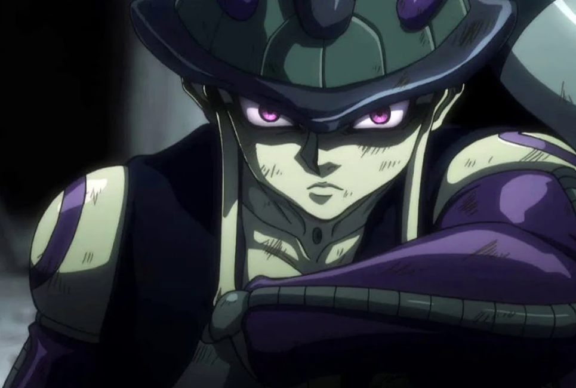

Meruem é um personagem fictício da obra Hunter x Hunter, o mangá escrito e desenhado por Yoshihiro Togashi. Hunter x Hunter foi primeiro publicado em 1999 na revista Shonen Jump e Meruem, o Rei das Formigas, aparece neste mangá no arco das Formigas Quimera.
Primeiramente, Meruem é o Rei das Formigas Quimera. Elas são bioprodutos do Continente Negro, uma terra inexplorada, inóspita e hostil. Elas são nativas de tal local, sendo tabeladas com a classificação de perigo B+. Meruem, como Rei das Formigas, é o ser mais forte dessa sociedade.
Ele fora gerado pela Rainha das Formigas Quimera, sua mãe, para se tornar o líder absoluto da sua raça e dominar a então frágil espécie humana. É um ser extremamente cruel e violento, que possui dentre seus subordinados, além das Formigas Quimera, os Guardas Reais Menthoyoupi, Neferpithou e Shaiapouf, que o obedecem cegamente.
No decorrer da série, Meruem vai tornando-se cada vez mais convencido de que a raça humana, que até então ele julgava inferior e queria dominar, podia ter salvação. Não de uma maneira ética e correta, mas em vez de propor a total aniquilação da mesma ele resolve desenvolver colônias de humanos e manter sua reprodução estável. Meruem tem tal insight após conhecer uma garota humana chamada Komugi, pelo qual ele se apaixona.
Por fim, graças aos esforços dos Hunters, Meruem é finalmente derrotado e a ameaça à humanidade foi detida, por enquanto. As Formigas Quimeras que se aliaram aos humanos ganharam um status de proteção da Associação Hunter; outras foram derrotadas e por fim Meruem já não existe mais, apesar de ter provocado danos irreparáveis à República de NGL, decimando mais de 90% da população, dentre os quais fauna e flora, e transformando milhares de humanos em Formigas Quimera.